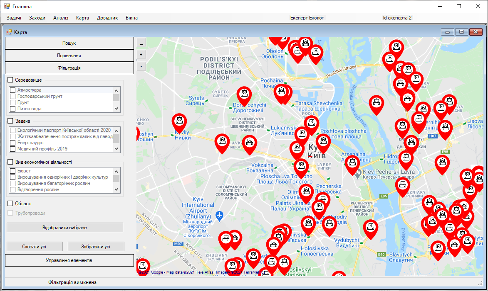

Крок 4. Вкладка «Фільтрація»
Експерт переходить на вкладку «Фільтрація», натискаючи на неї лівою кнопкою миші. На цій вкладці експерт може відобразити маркери, області та трубопроводи, які належать або відносяться до певної задачі, середовища чи виду економічної діяльності.
